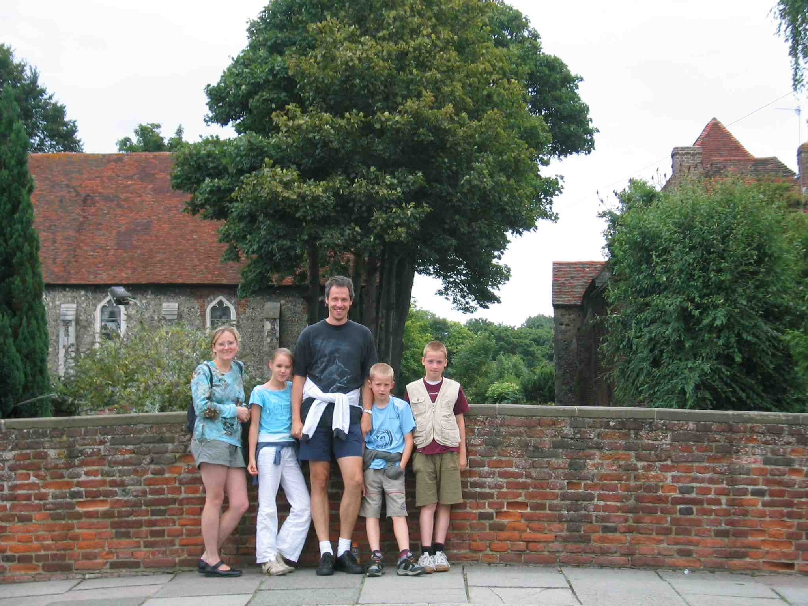
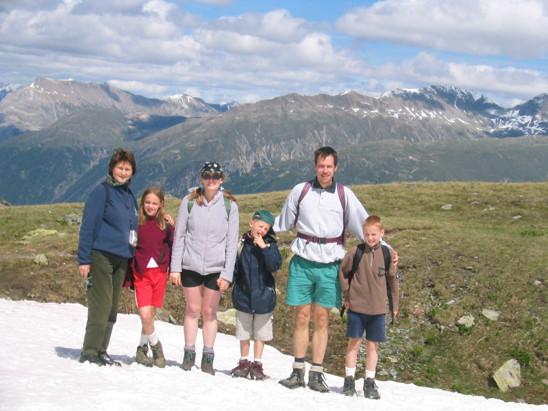

From left to right: Inge, Iris, myself, Karel, and Steven. Picture taken in
the summer of 2005 in Canterbury, England.

From left to right: Simonne (my mother in law), Iris, Inge, Karel, myself, and
Steven. Picture taken in the summer of 2004
near Piz Nair, Sankt Moritz, Switzerland.

Bonus: My mother's recipe for stuffed Christmas turkey! (in Dutch)